Вычислить и вывести на экран в виде таблицы значения функции F на интервале от Хнач до Хкон с шагом dx. Значения коэффициентов a,b,c ... , Хнач, Хкон, dx вводить с клавиатуры.
.Для контроля взять начальные данные, отличные от приведенных в примерах, проконтролировать правильность работы программы вычислением на калькуляторе. Результаты расчетов занести в отчет. В отчете указать результаты работы программы как на приведенных, так и на собственных данных.
| Вариант 1 | 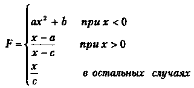 Вид экрана |
Вариант 11 | 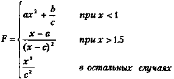 Вид экрана |
| Вариант 2 | 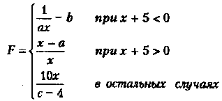 Вид экрана |
Вариант 12 | 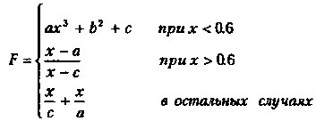 Вид экрана |
| Вариант 3 | 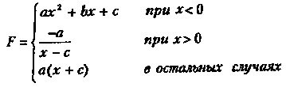 Вид экрана |
Вариант 13 | 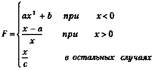 Вид экрана |
| Вариант 4 | 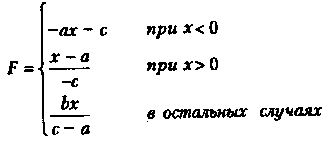 Вид экрана |
Вариант 14 | 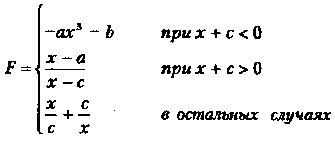 Вид экрана |
| Вариант 5 | 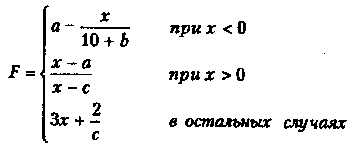 Вид экрана |
Вариант 15 | 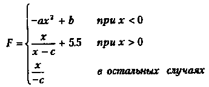 Вид экрана |
| Вариант 6 | 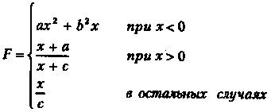 Вид экрана |
Вариант 16 | 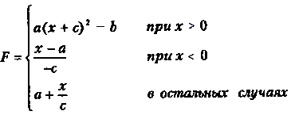 Вид экрана |
| Вариант 7 | 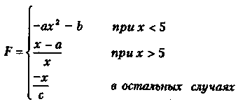 Вид экрана |
Вариант 17 | 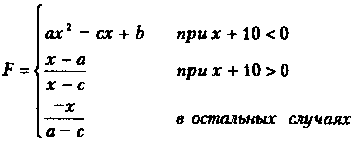 Вид экрана |
| Вариант 8 | 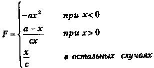 Вид экрана |
Вариант 18 | 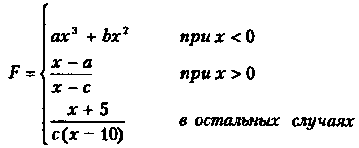 Вид экрана |
| Вариант 9 | 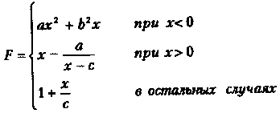 Вид экрана |
Вариант 19 | 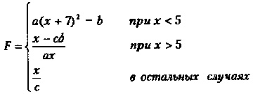 Вид экрана |
| Вариант 10 | 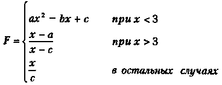 Вид экрана |
Вариант 20 | 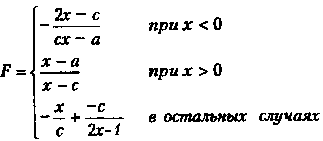 Вид экрана |